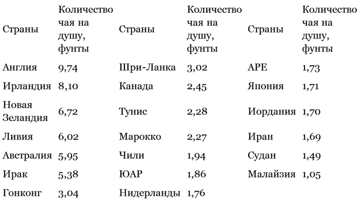

Кто снабжает мир чаем и где преимущественно пьют чай

Теперь, когда мы знаем о чае сравнительно много, невольно напрашивается вопрос: а как обстоит дело со снабжением человечества чаем в наши дни? Кто, какие страны снабжают мир чаем и где преимущественно пьют чай?
До недавнего времени (1990 год) пять стран – крупнейших производителей чая давали 70 % мирового производства. Из этих пяти стран по производству чая три принадлежат к числу чаепьющих стран. Это Китай, Япония, Россия. Почти 75-95 % чаепродукции этих стран шло на их собственное внутреннее потребление. Более того, Россия и Япония, кроме собственного производства, ввозят ещё и заграничные чаи, чтобы обеспечить потребности своего населения в чае. Таким образом, основными экспортерами чая на мировом рынке были и остаются Индия, Шри-Ланка и Индонезия, которые сами чай пьют весьма умеренно. За ними идёт африканская группа стран, которые экспортируют почти весь производимый ими чай. Это – Кения, Уганда, Малави, Мозамбик, Танзания, Заир, Мадагаскар, где внутреннее потребление практически отсутствует.
Таким образом, снабжение всего мира чаем в значительной степени сосредоточено в руках тех стран, само население которых чая не пьёт и в повышении качества его не заинтересовано. (Это относится также и к Грузии.) В то же время такая гигантская чаепроизводящая страна, как Китай, практически устранилась от вывоза чая на внешние рынки и если экспортирует, то немного по сравнению с внутренним производством. Это, конечно, не значит, что Китай перестал производить много чая. Но он производит его сегодня в количествах, покрывающих в основном лишь местные нужды, т.е. примерно пятую часть мирового производства (между 200 тыс. и 300 тыс. т – данные об этом производстве последние десять лет не публикуют). Для страны с миллиардным населением это немного, учитывая тамошние традиции чаепития. Из этого количества экспортируют примерно 50 тыс. т ежегодно (в 1972 году – 51, 3 тыс. т. Это последняя опубликованная цифра!). Таким образом, за последние сто лет происходило постепенное вытеснение Китая с мирового чайного рынка. Вот какими темпами шла эта утрата позиций Китая во всемирной чаеторговле.
Начиная с 40-х годов прошлого века Китай давал все 100 % мировой торговли чаем. В этом отношении у него не было конкурентов. Такие «великие чайные державы», как Англия и Россия, потреблявшие львиную долю производимого во всем мире чая, зависели от Китая, снабжавшего их чаем, и вынуждены были что называется «кланяться ему». Сам выход на мировой рынок Китая с чаем – результат длительного давления западных держав на Китай, который отказывался «открывать свои двери» и пошёл на вывоз своего чая отнюдь не добровольно. Только России и среднеазиатским государствам Китай продавал чай по своему желанию, так как эта торговля шла не на деньги, а носила вплоть до конца XIX века меновой характер. Но вынудив Китай продавать чай, Англия одновременно начала его производство в Индии и на Цейлоне (Шри-Ланка). И уже к концу XIX века положение изменилось: в 90-х годах Китай давал 70-66 % мировой торговли чаем, так как около трети мировых потребностей смогли уже производить Цейлон (Шри-Ланка) и Индия.
Накануне Первой мировой войны доля Китая упала до 25 %, а накануне Второй мировой войны или, точнее, к середине 30-х годов нашего века – до 10 %.
Войны, в которые Китай был втянут в 30-40-х годах, привели к сокращению его участия в мировой торговле чаем до нескольких процентов. Фактически оно было сведено на нет.
Только в период с 1949-го по 1959 год, за десятилетие народной власти, производство чая и его экспорт на мировой рынок были восстановлены до уровня, в половину того, что давала Индия и что было до войны – примерно около 10 % от общего поступления на мировой рынок.
Однако после нескольких лет «культурной революции» и других перетрясок, глубоко затронувших экономическую жизнь Китая, даже и эта скромная доля упала ещё ниже. Во-первых, она упала абсолютно, ибо на мировой рынок стали вывозить с каждым годом всё меньше и меньше китайского чая. Во-вторых, она упала относительно, поскольку за последние десятилетия значительно увеличился экспорт чая на мировой рынок не только со стороны чайных гигантов – Индии, Шри-Ланка, Индонезии, но и со стороны молодых африканских стран, которые хотя и производят не особенно большие количества чая, но зато всё произведённое вывозят, поскольку внутри этих стран чай не употребляют.
В результате доля Китая в мировой торговле чаем в 1970 году едва достигала 4-5 % и в 80-е годы не только не поднималась с этого низкого уровня, но и в отдельные периоды падала ещё ниже (фактически до 2-3). В настоящее время (90-е годы XX века) Китай несколько увеличил долю экспорта чая в США, особенно зелёного, а также вывоз чёрного чая в Германию, так что общее количество экспортируемого на мировой рынок чая увеличилось примерно вдвое, т.е. составляет в весовом отношении около 5-7 % продаж чая на мировом рынке. В 1993 году сохранялась тенденция роста экспорта, так что, видимо, Китай восстановит вскоре свою долю в 10 % мирового экспорта, но более этого вряд ли.
Надо иметь в виду, что чайные вкусы населения нашей планеты за последние полвека существенно изменились. Новые поколения привыкли к резким южноазиатским чаям – индийскому, цейлонскому и вполне удовлетворены ими.
Постоянными потребителями китайского чая остаются Англия и Япония, которые, несмотря на своё развитое чайное производство, охотно импортируют ценные китайские чаи. Небольшое количество китайского чая идёт в последние годы также в Ирландию, Австралию, Новую Зеландию, ЮАР, США и ФРГ. Во всех этих странах потребление китайских чаёв, сохраняющих высокую стоимость, всё более и более ограничивается сравнительно узким социальным слоем – верхушкой буржуазии и крайне немногочисленной теперь аристократией.
Основным же потребителем чая из не производящих чай стран остаются страны англосаксонской зоны, закупающие ежегодно на мировом рынке в общей сложности 850 – 870 тыс. т чая, а также арабские страны, Ливия, Египет, Ирак, Судан и Иордания, ввозящие вместе 150-170 тыс. т чая. Эти две группы стран потребляют чуть более половины производимого в мире чая, остальную половину «выпивают» Китай, Япония и Россия. На фоне этих чаепьющих гигантов процент потребления чая другими странами выглядит мизерным.
Характерно, что английское влияние в области бытовых традиций и привычек столь же прочно закрепилось и сохранилось как в странах, крепко связанных с Великобританией в прошлом (Канада, Новая Зеландия, Австралия, ЮАР), так и в странах, вёдших на протяжении длительного времени борьбу против английского колониального господства (Ирландия, Египет, Судан, Ирак).
Этот факт ещё более наглядно подтверждают данными о потреблении чая на душу населения в разных странах. Среди двух десятков стран с наивысшим потреблением чая (более 0, 5 кг на душу в год) три четверти находились в прошлом либо находятся по сей день под английским влиянием. Исключение составляют лишь Япония, Иран, Нидерланды, Марокко и Тунис – страны с давней, добританской чайной традицией (см. таблицу).
Потребление чая на душу населения в год

Интересно, что в этой таблице отсутствуют данные о потреблении чая на душу населения в двух таких великих чаепьющих странах, как Китай и Россия.
Что касается Китая, то данные о приобретении чая в этой стране на душу населения всегда были предметом догадок, ибо никакой статистики на этот счёт не существовало и, по-видимому, не существует. Можно лишь предполагать, что китайцы потребляют чая примерно столько же, сколько и в Гонконге, т.е. свыше 1 кг, но не более 1, 5 кг на душу в год.
Дело в том, что в Китае в отличие от Японии потребление чая семейное. Чай заваривают в больших чайниках обязательно на всю семью, поэтому расход чая гораздо меньший, хотя его крепость и частота потребления не меньше, чем в Англии, где потребителями чая являются одинокие люди или семьи стариков из двух человек. В этом случае расход чая резко возрастает.
В Индии, США на душу населения приходится менее 300 г чая, в Индии – 290 г, в США – 277 г, в России – 249, 5 г. Объясняется это разными причинами: в Индии – бедностью большинства населения, которому чай просто не по карману; в США – значительным процентом среди населения германских и романских народов, а также негров, которые не употребляют чай как напиток; в России – установившейся в последние годы привычкой большинства населения пить довольно жидкий чай. В то же время в нашей стране есть отдельные районы (Бурятия, Башкирия, Калмыкия, Татария), где потребление чая на душу населения в год достигает более 4 кг, т.е. примерно стоит на уровне потребления чая в Англии.
За самое последнее место в мире по потреблению чая на человека «спорят» Испания и Греция, где на каждого приходится в год всего-навсего 20 г, т.е. почти вдвое меньше, чем идёт на заварку в течение одного дня у скромной английской семьи. Недалеко ушли от этих «чемпионов» жители Франции и Италии, довольствующиеся 50-граммовой пачкой чая в течение года, но зато выпивающие уйму вина.
Существует довольно чёткое распределение потребления чая, кофе, пива и вина, которое никогда не «перекрещивается». Это значит, что народы, потребляющие кофе или вино, не потребляют одновременно чая. Самые яркие примеры – французы и итальянцы, с их 30-40 г чая в год! А с другой стороны – китайцы, японцы и узбеки, на которых в среднем приходится по 0, 1 литра виноградного вина на целый год.
Не менее поразительно и то, что потребление чая, принадлежащего к самым безвредным, а скорее к полезным напиткам, весьма умеренно даже у «чемпионов» такого потребления. Чай потребляют килограммами – от 1 до 4 кг, кофе – уже десятком килограммов – от 9 до 12 кг, вино – десятками литров – от 50 до 100 л, а пиво – сотнями литров – от 100 до 150 л. И после этого находятся люди, которые боятся заваривать чай «чуть-чуть покрепче»?!